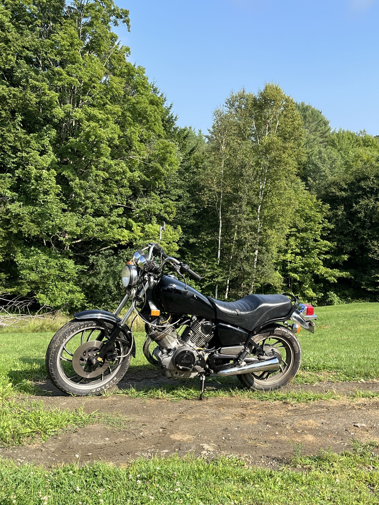
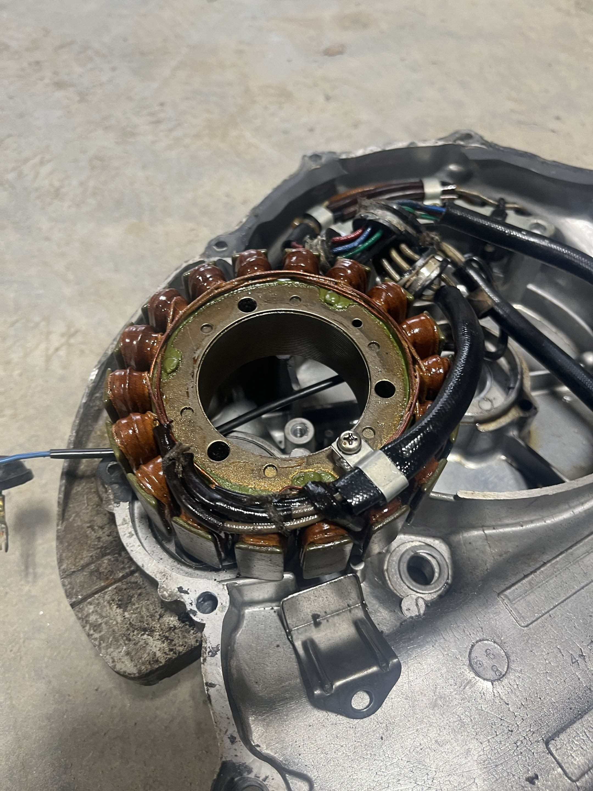
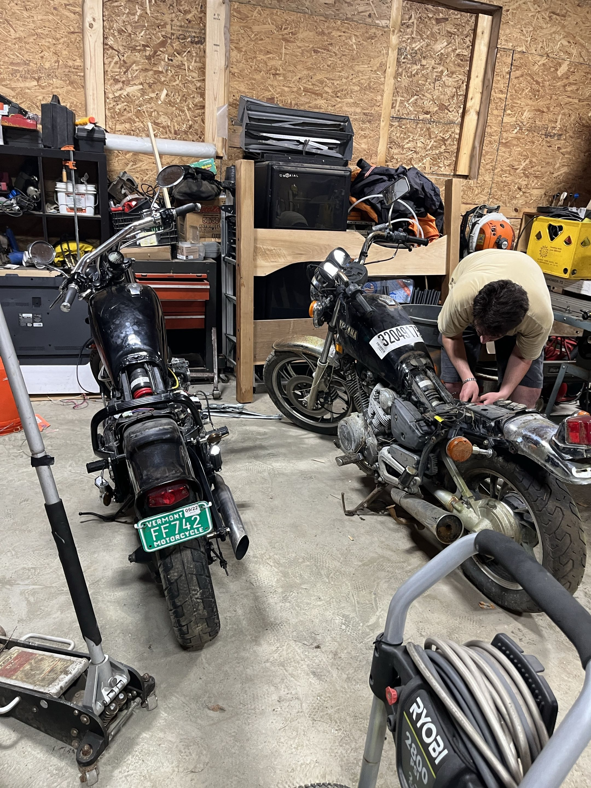
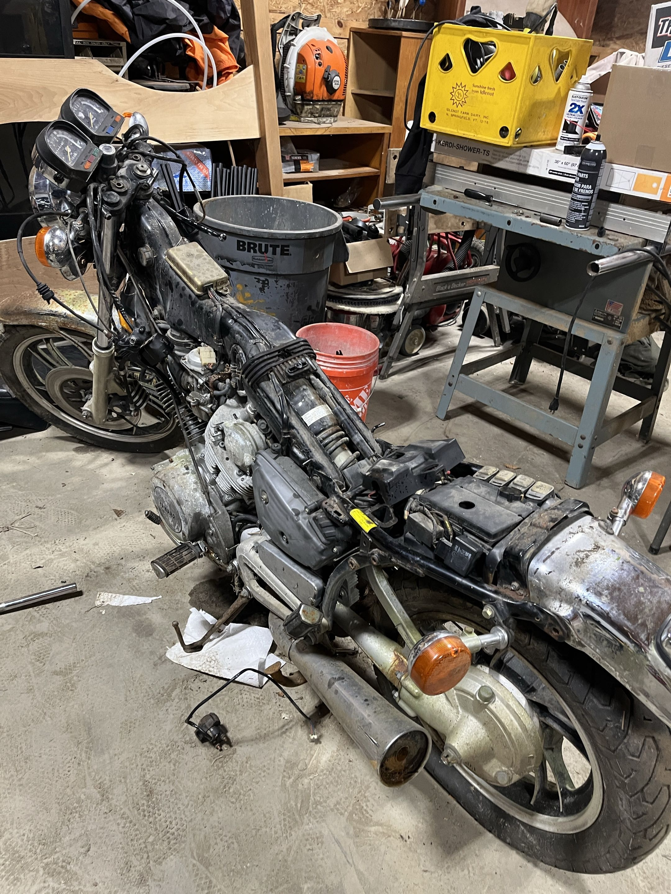
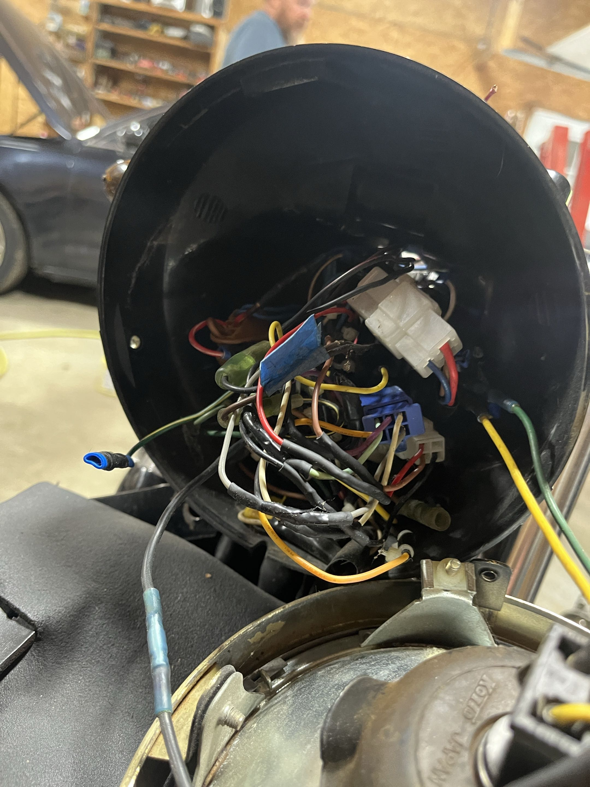
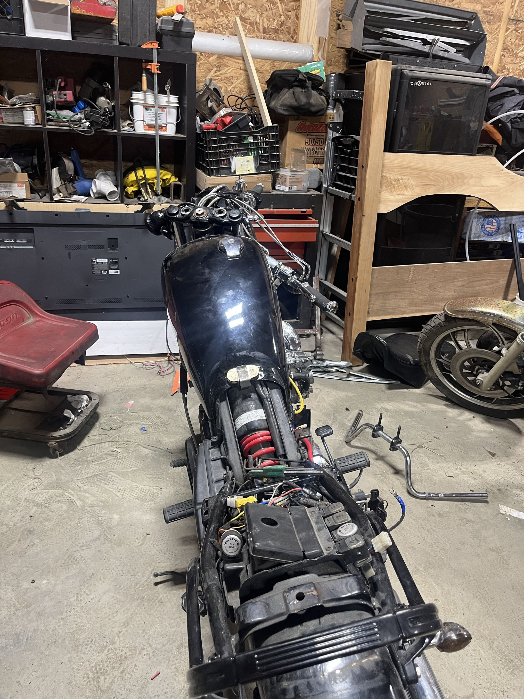
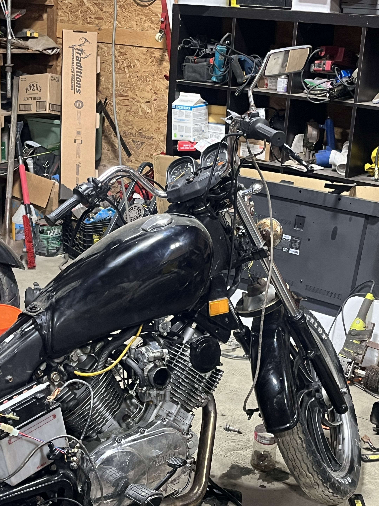

1981 Yamaha Virago Rebuild
My friend and I took on the summer project of a complete motorcycle rebuild







Note: This project predates this portfolio; I was doing this purely for fun without any notion that this was a relevant engineering project, so frankly my documentation is poor.
My friend had recently purchased a non-running Yamaha Virago. I say 1981, as that was the year of most of the parts, and the engine, an XV 920cc, matches that year. Thanks to some overdue favors at the local junkyard, we were lucky enough to obtain another 1981 Virago, also non-running but for different reasons. With two completely broken bikes, we now had most of the parts to make a good bike. We selected the original bike to fix, and the junkyard one as the donor. We did this simply because the engine was larger on the original, but they were in similar enough states that we did debate.
In short, we found the original wiring diagrams online and entirely recreated the harness as both ones we had were heavily mouse-chewed. Then, after getting a new battery, we initially thought the starter motor was the problem. As it turned out, it was only one of the problems, but nonetheless we fully disassembled it and the engine, and replaced all of the worn out gears. We discovered that part of the problem here was a flaw that Yamaha had recognised, and solved on the newer model. With a little rearanging of parts to adjust spacing, we got that part running, but quickly realized there was something wrong with the alternator. After narrowing it down to a bad stator (Figure 2), we were able to replace that, and get the alternator to function. From there, after reasemmbling the engine with some gasket-in-a-can, we performed an oil change on the 40 year old bike which proved to be more of a hassle than expected.
Finally, we got it running at stable RPMs, and so we took it for a test drive a mile down the road towards the gas station. When we got there, the bike died. We had spent most of our summer after work fixing these larger issues with this bike, I simply assumed that there must be some significant problem. So, we pushed the ~600lb bike a mile up the entirely uphill road back to the garage, just to discover that it was simply out of gas, which would have been useful to figure out when the bike had died at the gas station.
Overall, this was an incredibly rewarding experience. I learned a lot about smaller combustion engines like the V-Twin, I gained a lot of experience with electrical repair, and with the later anecdote, I learned that sometimes the solution to a given problem is not the most complex one, but rather the simpler one literally right in front of you.